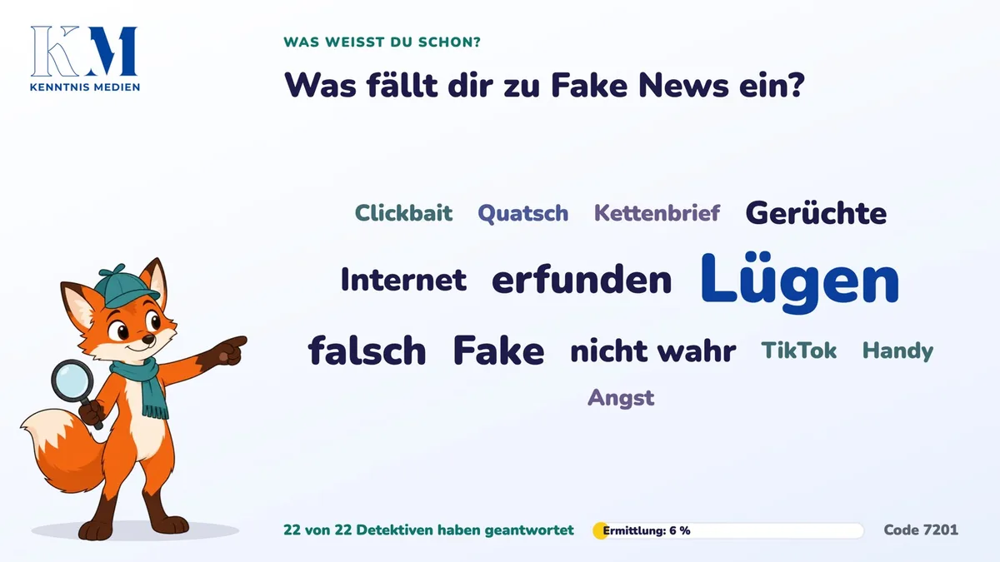
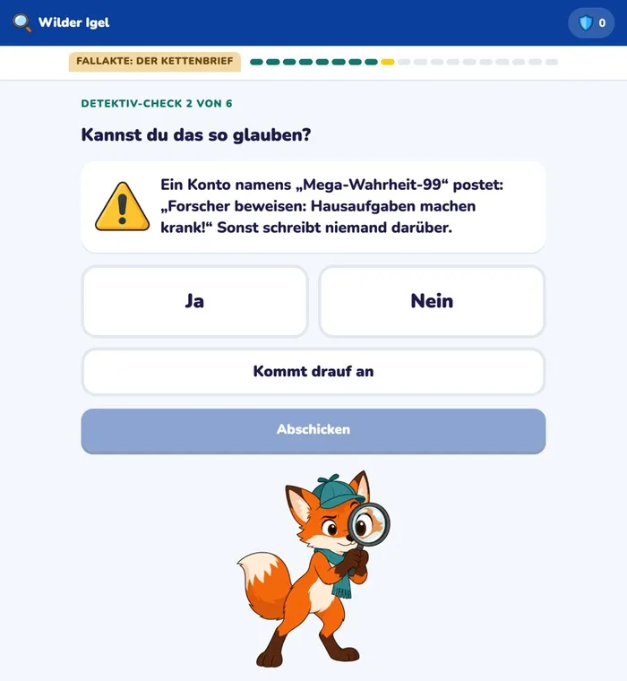
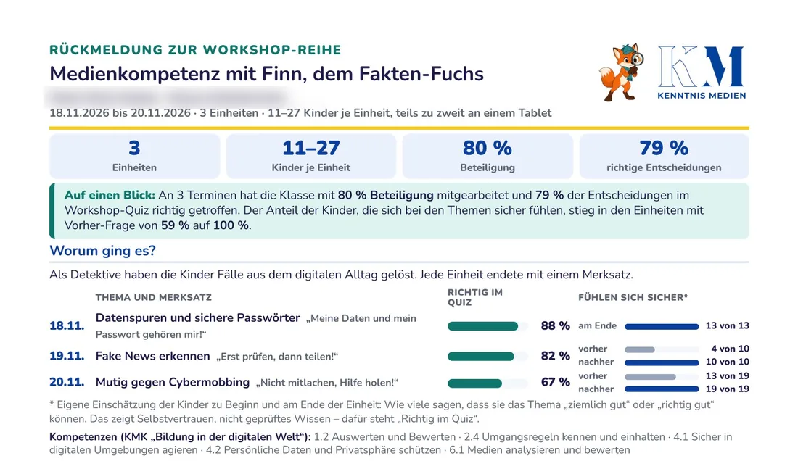

Die Workshop-Woche mit Finn, dem Fakten-Fuchs.
Vier Tage, je zwei Schulstunden, eine Klasse voller Detektive. Die Kinder lösen Fälle aus ihrem digitalen Alltag, ermitteln an Tablets und gehen mit einem Merksatz für jeden Tag nach Hause.
Workshops mit Calogero LucianoJugendleiter mit Juleica · bekannt aus rbb und ZDF logo!Gründer und Leitung
Vier Tage, vier Fälle
Jeder Tag beginnt mit einem Beweisstück aus einem ausgedachten Klassenchat. Die Kinder suchen Spuren, entscheiden selbst und finden gemeinsam heraus, was hilft.
Tag 1Handy-Tricks durchschauen
Warum „nur fünf Minuten“ so oft zwei Stunden werden: Likes, Benachrichtigungen, Endlos-Scrollen.„Ich bin der Boss, nicht mein Handy!“
Basiscurriculum MedienbildungAnalysieren · ReflektierenKMK-Kompetenzrahmen4.3 · 6.2
Tag 2Datenspuren und Passwörter
Was ein öffentliches Profil verrät und wie man ein Passwort baut, das niemand errät.„Meine Daten und mein Passwort gehören mir!“
Basiscurriculum MedienbildungKommunizieren · ReflektierenKMK-Kompetenzrahmen4.1 · 4.2
Tag 3Fake News erkennen
Ein Kettenbrief im Klassenchat: Wer steckt dahinter, und wie prüft man so etwas?„Erst prüfen, dann teilen!“
Basiscurriculum MedienbildungInformieren · AnalysierenKMK-Kompetenzrahmen1.2 · 6.1
Tag 4Mutig gegen Cybermobbing
Hinschauen statt mitlachen: Was Betroffene, Zuschauer und die Klasse tun können.„Nicht mitlachen, Hilfe holen!“
Basiscurriculum MedienbildungKommunizieren · ReflektierenKMK-Kompetenzrahmen2.4 · 4.1
Die Fälle sind den Kompetenzbereichen des Berliner Basiscurriculums Medienbildung (Rahmenlehrplan 1–10, Teil B) und dem KMK-Kompetenzrahmen „Bildung in der digitalen Welt“ zugeordnet. Die KMK-Kompetenzen stehen auch im Gesamtbericht für die Schule.
Jedes Kind macht mit
Die Kinder antworten an Tablets, die Ergebnisse erscheinen live am Beamer. So kommen auch die Stilleren zu Wort. Ohne Anmeldung, nur mit Fantasienamen. Die App läuft im Browser der Schul-Tablets, ohne Installation.


Was nach der Woche bleibt
- Gesamtbericht für die Schule: was die Klasse schon kann, wo sich Weiterarbeit lohnt, mit Unterrichtsideen und Bezug zum Basiscurriculum Medienbildung. Anonym, ohne Namen.
- Lernvideos mit Finn zu jedem Thema, je etwa anderthalb Minuten, frei auf YouTube.
- Arbeitsblätter mit Lösungen und Gesprächsimpulsen, kostenlos im Unterrichtsmaterial.
- Elternkarte mit den Merksätzen und QR-Codes zu den Videos.
- Finns Detektivbüro: ein Detektivspiel, mit dem die Kinder zu Hause weiterermitteln.
Datenschutz: keine Anmeldung, keine Namen im Bericht, Antworten nur während des Workshops im Arbeitsspeicher, Server in Deutschland.

So läuft es ab
20 Minuten bei Ihnen an der Schule, gern mit Schulsozialarbeit oder Medienbeauftragten. Ich zeige die App und einen Fall.
Sie wählen Klassen und Wochen. Sie erhalten ein unverbindliches Angebot, finanzierbar z. B. über den Förderverein oder Förderprogramme.
Ich komme vier Tage in die Klasse. Danach erhalten Sie den Gesamtbericht, die Kinder die Elternkarte.
Das sagen Schulen
„Den Workshop haben wir bereits an einige Kolleg:innen weitergeleitet.“
Kolumbus-Grundschule Reinickendorf
„Die Schüler:innen waren sehr begeistert.“
Lessing-Gymnasium Berlin-Mitte
* Selbsteinschätzung der Kinder vor und nach der Workshop-Woche in der ersten Klasse mit der Mitmach-App (November 2026). Sie zeigt Selbstvertrauen, kein Wissen; das Wissen prüft das Quiz im Bericht.
Kennenlernen vereinbaren
Schreiben Sie mir kurz, für welche Klassen Sie planen. Ich melde mich innerhalb von zwei Werktagen.
Calogero Luciano · calogero@kenntnis-medien.de